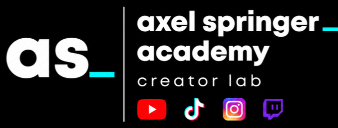

Stats · Creator Economy
Wie Creator Economy Medienhäuser verändert
Creator-Strategien sind für Publisher längst mehr als ein Social-Media-Thema. Sie berühren Reichweite, Erlöse, Markenbindung und die Frage, wie Journalismus auf Plattformen sichtbar bleibt.
These
Medienhäuser verlieren klassische Plattform-Reichweite. Gleichzeitig entstehen neue Erlöse dort, wo journalistische Inhalte an Personen, Communitys und wiedererkennbare Creator gebunden sind.
-43 %Facebook-Weiterleitungen
-46 %X/Twitter-Weiterleitungen
37 Mrd. DollarUS Creator Ad Spend 2025
Was heißt das für Axel Springer?
Die Beispiele zeigen: Creator Economy ist kein Zusatzkanal, sondern ein mögliches neues Betriebssystem für journalistische Marken. Wer Reichweite, Vertrauen und Erlöse künftig sichern will, muss journalistische Persönlichkeiten systematisch identifizieren, entwickeln, schützen und mit Marken, Plattformen und Geschäftsmodellen verbinden.
Stats · Marktanalyse
Social-Media-Benchmark
Wir haben analysiert, wie andere Medienhäuser, öffentlich-rechtliche Formate, Sport-Creator und Politfluencer auf TikTok, Instagram und YouTube arbeiten. Die Frage: Was können wir daraus für Axel Springer lernen?
Viele Medienhäuser setzen weiter stark auf ihre Marke. Hosts kommen vor, stehen aber selten wirklich als eigene Creator im Mittelpunkt.
Erfolgreiche Accounts arbeiten mit festen Gesichtern, wiederkehrenden Settings, klaren Hooks und eigener visueller Sprache.
Viele Accounts posten regelmäßig, reagieren aber kaum. Genau hier liegt ein großes Potenzial für journalistische Creator.
Was Axel Springer daraus lernen kann
Der Benchmark zeigt: Erfolgreicher Creator-Journalismus entsteht nicht durch bloßes Posten auf Social Media. Entscheidend sind klare Hosts, plattformgerechte Formate, sichtbare Quellen, wiedererkennbare Settings, echte Community-Arbeit und eine saubere Trennung von Information, Analyse und Meinung. Axel Springer kann daraus ein eigenes Creator-System entwickeln, das die Stärke etablierter Marken mit der Nähe journalistischer Persönlichkeiten verbindet.
Zum Playbook